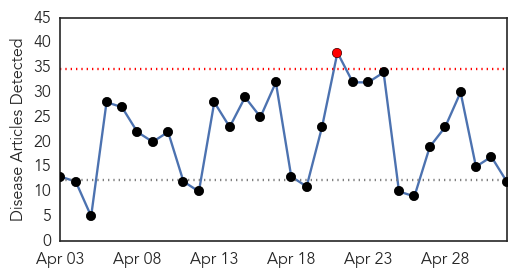
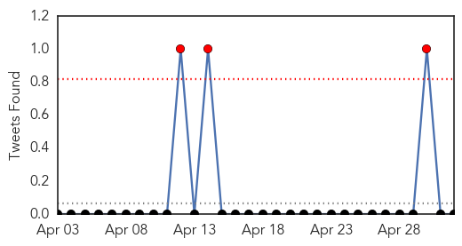
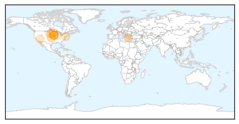
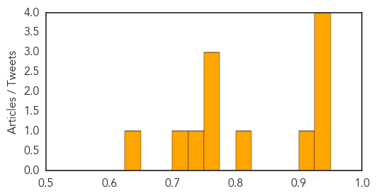

Toggle navigation
Early Warning
Daily Alerts
Influenza
May 02, 2015
Compare to:
-
Dengue Fever
Hemmorhagic Fever
Mold/Fungal Infection
Meningitis
Pertussis / Whooping Cough
Middle East Respiratory Syndrome
Cholera
Hepatitis
Chikungunya
Yellow Fever
Bubonic Plague
West Nile Virus
Swine Flu
Ebola
Measles
Unknown
Mumps
30 Day Trends
Web: 1
alerts
, 0
warnings
Twitter: 3
alerts
, 0
warnings
Top Articles:
0.946
U.S. bird-flu outbreak elevates rapidly affecting 16 million; Governor declares “state of emergency” for Iowa
0.935
Bird flu virus raises questions scientists working to answer
0.931
Flu outlook 2013-2014: ‘Don’t hesitate, vaccinate!’
0.930
Iowa becomes 3rd state to declare emergency over avian flu outbreak — RT USA
0.916
State, federal response needed as bird flu wreaks havoc on ag economy
0.806
More Bird Flu Outbreaks in Minnesota, State of Emergency in Iowa
0.751
May 2, 2015 Archives
0.751
May 1, 2015 Archives
0.751
May 1, 2015 Archives
0.733
Iowa governor declares state of emergency due to bird flu outbreak
0.725
Iowa declared state of emergency as bird flu spreads
0.628
Dog flu outbreaks temporarily close shelters, suspend adoptions
Top Tweets:
No tweets found for May 02, 2015
Web/News Articles

Tweets

Article Locations

Article Confidences
